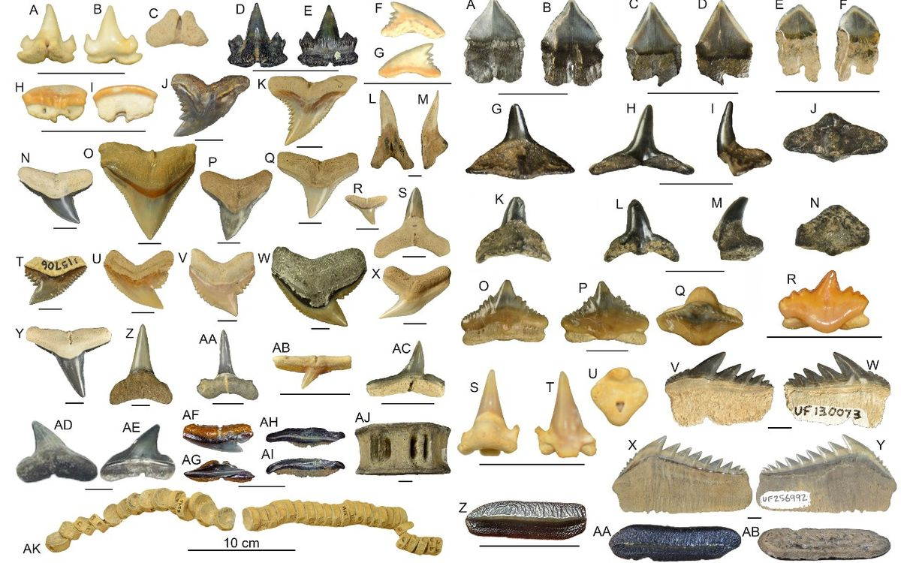

Produkti, kas var saturēt haizivi un tās daļas:

- Sīgu filejas, zivju pīrādziņi vai zivju pirkstiņi
- Akmens lasis
- Krabju nūju imitācijas
- Uztura bagātinātāji, kas satur hondroitīnu vai skvalēnu/skvalānu (haizivju skrimšļus un haizivs aknu eļļu)
- Mājdzīvnieku barība, uztura bagātinātāji un gardumi
- Dārza mēslojums
- Rotaslietas (zobi)
- Suvenīri (haizivju žokļi un zobi)
- Pretnovecošanas krēms
- Ādas losjons
- Dezodorants
- Matu krāsa, šampūns un kondicionieris
- Kosmētika: acu ēnas, lūpu krāsa un tonālais krēms
- Lūpu balzams
- Sauļošanās krēms
- Sejas tīrīšanas līdzeklis
- Maki, apavi, rokassomas, pat mēbeles no Shagreen (haizivju un dzeloņraja ādas)
- Vakcīnas (pandēmiskās gripas, malārijas vakcīnas)
- Ārstnieciskie krēmi (brūču, ādas kairinājumu, hemoroīdu dziedēšanai)
- Uztura bagātinātāji un alternatīvās zāles, kas satur žaunu grābekļus
- Alternatīvās zāles (artrīta, astmas, ekzēmas, jostas rozes, reimatisma, hemoroīdu, drudža, psoriāzes un vēža ārstēšanai)
- Enerģijas un veselības dzērieni (meklējiet hondroitīnu)
- Šagrīns (smilšpapīrs)
- Rūpnieciskās smērvielas un tīrīšanas līdzekļi